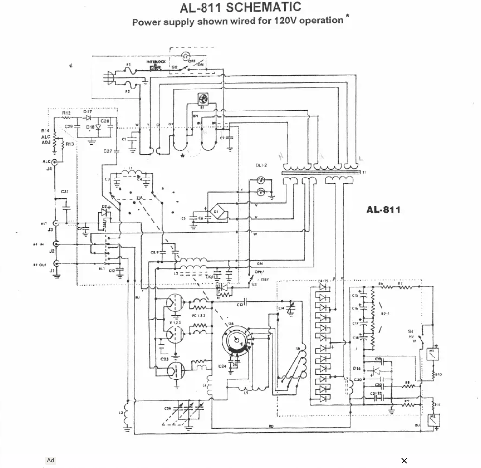

The initial symptom
The amplifier showed extremely high input SWR when checked with a NanoVNA — especially on 30 meters and higher. At first, it looked like the classic “bad upper-band input network” problem.
With the relay manually closed, however, the problem appeared broader. That moved the diagnosis away from a simple band-switch setting issue and toward the RF input path as a whole.
Safety note
This troubleshooting involves a tube amplifier with lethal high voltage. The amp must be unplugged and safely discharged before internal inspection or resistance checks. RF tests with a NanoVNA should use low signal level and no transmitter drive.
Initial inspection and sanity checks
Before power-up / early checks
- Smell test: check for burnt odor from transformers, resistors, or wiring.
- Visual inspection: inspect every capacitor, inductor, and resistor for damage.
- No signs of pitting, burning, cracked parts, or bulging capacitors.
- No loose solder joints or wiring; nothing mechanically loose in the chassis.
- Rotary switch and tuning capacitors clean; remove dust and debris.
- Metering circuit: verify resistor values and replace any out-of-spec parts.
- Bleeder resistors: check for correct value and secure mounting.
- HV power supply capacitors: visual condition acceptable (no swelling/leakage).
This amp was originally built in 1986 and had prior work (notably an external rear-mounted fan), so extra care was taken to verify modifications and overall condition.
There are many AL-811 schematics online, but variations do exist. It is important to inspect your specific unit and identify which version matches your wiring before relying on any diagram.
Step-by-step troubleshooting timeline
Verify the metering circuit and replace the blown diode
Before trusting the amplifier readings, the metering circuit was checked and a blown diode was replaced. That mattered because later conclusions depended on knowing that the plate voltage, plate current, and grid current indications were meaningful.
Conclusion: the amp was not just an RF problem; the instrumentation had to be made trustworthy first.
Clean the relay and rotary contacts
The relay and band-switch contacts were cleaned carefully. This immediately changed the picture: the amp no longer looked completely open, but the input SWR was still poor.
Result: roughly 2:1 on 160/80, about 3:1 on 40, and 5–7:1 on the upper bands.
Use the shape of the NanoVNA trace
The dips were present and mostly centered correctly, but they were shallow. That was important: it meant the input network was resonating, but not transforming impedance correctly.
Remove tubes one at a time
The 811A tubes were removed one at a time, then all removed. The input SWR did not change.
Conclusion: the tubes were not the cause of the input SWR problem.
Trace the RF input path
The working assumption was to trace from the SO-239 input connector, through the relay, through the rotary switch, and toward the filament/cathode system. Some DC checks were misleading because the input network couples through capacitors, not a simple DC path.
Find the missing RF return behavior
Filament-to-ground appeared open unless the relay was pressed, where a roughly 10 Ω reading appeared through an auxiliary relay contact. A temporary wire from filament to ground helped only slightly, dropping SWR from around 7:1 to 5:1.
Interpretation: a random wire was not a proper RF return, but it confirmed the filament/cathode return path mattered.
Try a 0.01 µF capacitor from filament to ground
Holding a 0.01 µF capacitor from the filament point to chassis produced a deep 1:1 dip, although initially shifted in frequency. That was the key discovery.
Conclusion: the input network was alive. The amp needed a proper RF cathode/filament return network.
Install the filament return network
The final repair used the known AL-811 style network:
filament pin → 0.01 µF / 1 kV capacitor → 220 Ω resistor → chassis ground
A 220 Ω, 5 W carbon film resistor was used. Carbon film is low-inductance enough for this HF application, and 220 Ω is close enough to the 200 Ω target.
Most input SWR readings fell below 2.2:1
After the RC network was installed and the input was touched up, most bands measured below about 2.2:1. The shared 20/30 meter section remained a compromise: approximately 2.2:1 on 20m and 3.7:1 on 30m before final compromise tuning.
The key repair
The critical missing piece was not a tube, not a destroyed input coil, and not the NanoVNA. It was the lack of a proper RF return from the filament/cathode system to chassis.
Corrective network: Filament pin 1 or 4 ↓ 0.01 µF capacitor, 1 kV minimum ↓ 200–220 Ω low-inductance resistor ↓ short chassis ground
Why it mattered
The AL-811’s input network can resonate even with a weak return path, which is why shallow dips were visible. But without the correct RF return, the network could not transform the input impedance properly to something the radio liked.
The temporary capacitor test proved that the matching network was fundamentally capable of a deep dip.
Measurements and operating notes
| Observation | Meaning | Action |
|---|---|---|
| Blown metering diode found | Meter readings could not be fully trusted until repaired | Verify metering circuit and replace diode |
| 20:1 input SWR at first | Gross input path or return problem | Clean relay/switch and trace input path |
| Shallow but centered dips | Network resonating but not matching correctly | Look for return-path or loss problem |
| Removing tubes made no difference | Tubes were not the input SWR cause | Focus on network, relay, switch, and cathode return |
| 0.01 µF cap gave a deep dip | Input network was capable of matching | Install proper RC return network |
| 40 W drive produced about 400 mA plate current | Healthy gain; no need to overdrive | Keep plate and grid current within limits |
| Grid current stayed around 50 mA | Not a problem; grid current is a ceiling, not a target | Do not force grid current higher |
Other lessons from the repair
Do not trust one measurement blindly
A DC ohmmeter reading can be misleading in an RF circuit where capacitors intentionally block DC but pass RF.
Trace the circuit in small sections
SO-239 → relay → rotary switch → input network → filament/cathode return. Each section tells a different story.
Use temporary tests intelligently
The hand-held capacitor test was not the final repair, but it proved the root cause.
Final operating picture
After repair, the amplifier tuned normally, input SWR became reasonable on most bands, transmit worked cleanly with the FTdx10, and the amp produced useful output with modest drive.
The working rule became simple: tune carefully, keep plate current conservative, watch grid current as a limit, and avoid pushing the 811A tubes harder than needed.
The AI Elmer angle
The human operator still did the real work: opening the amp, observing relay behavior, making measurements, soldering parts, and judging what changed. The AI role was to act like an Elmer: asking for the next measurement, interpreting partial results, and keeping the troubleshooting path organized.
The successful workflow was not “AI replaces the operator.” It was “operator plus AI gets to the right experiment faster.”
That combination turned a confusing used amplifier into a working station amp and saved a substantial amount of money compared with buying a new 600 watt amplifier.
What was fixed
- Metering circuit verified and blown diode replaced
- Relay and rotary switch contacts cleaned
- Input-network behavior understood using NanoVNA traces
- Tubes ruled out by removal test
- Missing/weak filament RF return identified
- 0.01 µF + 220 Ω return network installed
- Input SWR reduced from extreme values to usable values
What remains worth monitoring
- 20/30 meter input compromise
- Plate voltage sag under load
- Relay and band-switch contact health over time
- Unun power rating and heating when using the long-wire antenna
- Tube plate and grid current during normal operation
Amplifier schematic (your unit)
This build used a specific AL-811 variant. Insert your exact schematic here for reference. Because multiple versions exist, always confirm component placement against the physical unit.
This is the actual schematic used for this repair.

.Note that different AL-811 versions exist, so always confirm wiring against your own unit.